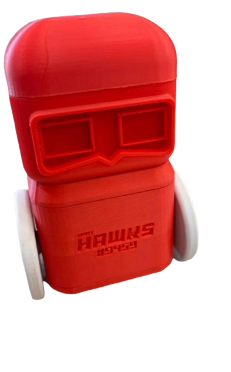

RPRT HAWKS #9459
Listener
Uma ideia, uma sequência de comandos, um novo caminho.
ANTES DE COMEÇAR
Vamos preparar sua jornada
Conte um pouco sobre você para ajustarmos a linguagem do jogo.
Com o serviço configurado, os dados iniciais são enviados para registrar a sessão. Sem ele, ficam na memória até o envio final; se o envio não estiver disponível, os dados pendentes são preservados neste dispositivo até nova tentativa.
SUA JORNADA
Fundamentos da lógica de programação
Conclua os desafios em ordem para liberar o próximo fundamento.
SUA JORNADA
Desempenho
Métricas calculadas a partir de desafios concluídos e dicas utilizadas.
Metas atingidas
Conquistas recentes
PREFERÊNCIAS
Configurações
Ajuste recursos de acessibilidade e áudio neste navegador.
Preferências salvas neste navegador.
RPRT HAWKS / LISTENER
Sobre o projeto
História do projeto
Nós, da equipe RPRT HAWKS #9459, desenvolvemos o Listener para mostrar que todos podem aprender lógica de programação. Nosso objetivo é tornar o pensamento computacional mais simples e acessível para crianças, jovens e adultos, porque compreender essa lógica é um passo importante para aprender e criar com tecnologia. Agora, com a versão online, damos continuidade a essa missão e ampliamos o alcance do projeto físico, permitindo que pessoas de diferentes lugares vivam a experiência. Queremos alcançar cada vez mais pessoas que possam explorar a lógica de programação e descobrir seu potencial, onde quer que estejam.
Objetivo educacional
O jogo ensina fundamentos da lógica de programação de forma prática e progressiva. Por comandos de voz ou blocos, o participante aplica sequenciamento, repetição e condicionais para resolver desafios e observar o resultado de suas instruções no ambiente virtual.
SEQUENCIAMENTO
Desafio
DESAFIO CONCLUÍDO
Desafio concluído!
TRILHA CONCLUÍDA
Parabéns! Você concluiu todos os desafios do Listener!
Você explorou sequências de comandos, repetições e decisões na programação.
SUA OPINIÃO